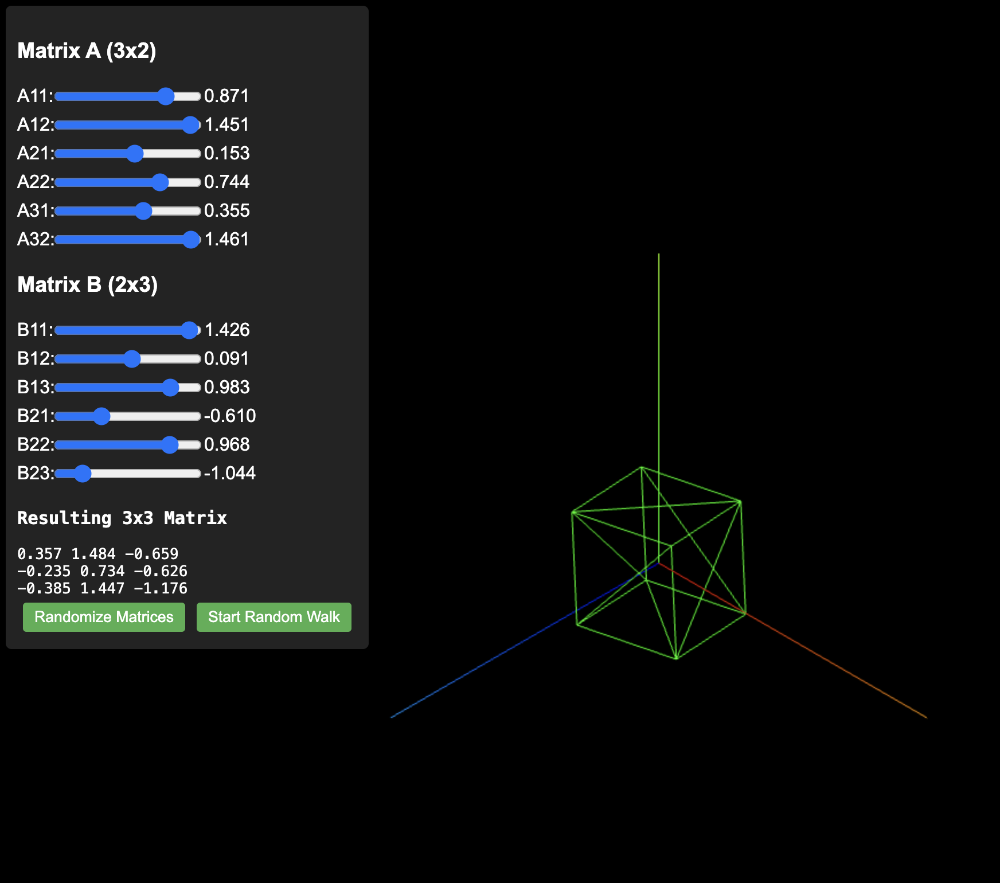

Low Rank Pertrubations
Table of Contents
Perturbations in Low-Rank Decomposition
I wrote briefly about what gradient updates inside decomposed matrices do, semantically, compared to gradient updates in full-dimension matrices. The core idea I alluded to in that post was that a perturbation inside the low-rank decomposition matrices corresponds to a perturbation along a manifold inside the full matrix. We can define a subspace of dimension \(r\) inside the full space, and a perturbation in the decomposed matrix can only ever travel along that subspace, compared to a random perturbation in the full matrix which can go in any direction. This was mostly sufficient for weakly understanding Multi-Head Latent Attention: we limit the types of legal transformations to ones able to be written via a certain rank, and we hope those are sufficient for good results.
I wanted to understand this a little better, so I wrote a little tool which will help visualize what is actually happening. You can play with this tool here, but I wanted to include some notes on the linear algebra here.

Illegal Transformations
In this little toy application, we start with a unit cube 1x1x1, and we can think of a 3x3 matrix being some sort of 3D transformation applied to this unit cube. As a result, we can understand what a 3x3 transformation does, at least vaguely, by understanding what it does to this cube after you apply it.
In this case, we decompose this 3x3 matrix into a 3x2 matrix followed by a 2x3 matrix. This is higher than we would use for MLA (notably this uses more parameters, so it's not compression), but it allows us to get some visual understanding for what's actually happening. We can control the resulting 3x3 matrix by adjusting the values in these decomposed matrices via the sliders, and these get multiplied together to get a rank 2 3x3 transformation, which we apply to the cube.
If you think of what these decomposed matrices are doing individually, we first project from 3 dimensions onto a plane in 2 dimensions, and then we project from the plane back up to 3 dimensions. This is, in effect, a 3 dimension to 3 dimension transformation. However, we have to travel through this 3 dimensional bottleneck first, which means that a bunch of transformations become impossible to represent this way. One super simple one to understand is the identity matrix: [[1,0,0],[0,1,0],[0,0,1]] cannot be decomposed into a low-rank bottleneck like this, the best we can manage is an approximation.
In general, any rank 3 transformation becomes "illegal", and we lose the ability to transform the unit cube according to any rank 3 transformation. This seems to me to suggest we will always have some sort of plane, but that doesn't seem to be what I'm seeing. That's why this is a WIP page! Wtf is going on here.